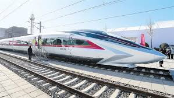
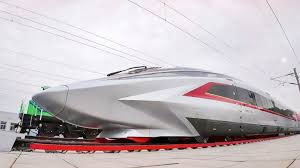
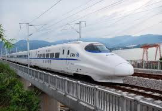
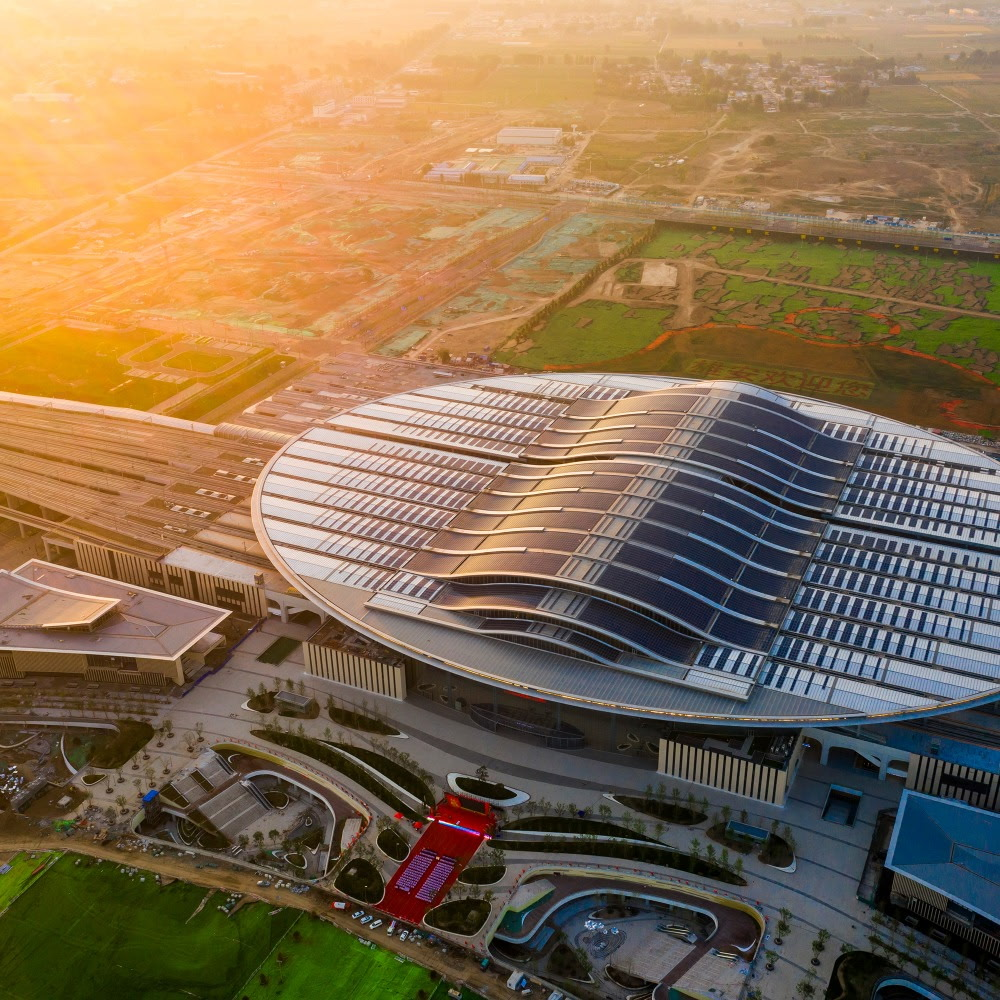

Chinese and American Speed Rail
随着中国的现代化发展，民众的出行的需求也愈发高涨。而高铁这种在保证旅行速度同
时并且成本相较于飞机更低的出行方式已经成为了民众在出行时不可替代的选择。本篇文章将简
单的回顾一下高铁在中国的发展以及其对于中国社会的影响。

改革开放之初，人们了解到日本在六十年代开发了新兴的高速列车，称之为新干线。当
时的中国政府，看中了这种技术对于中国发展的巨大潜力。高速列车对于地形的需求没有机场那
么高，而且可以沿着之前的普通铁路建造。因此相对于机场，所辐射的区域更为广阔，更利于各
地的民众出行。当然，铁路的运力也是飞机所不能比拟的。

此外，发展高铁可以同时发展电力等其他技术，所以发展高铁不但能满足人们出行的需
求，同时还能促进其他产业的持续发展，提供大量工作岗位。高铁建好以后所带来的经济效益也
是巨大的。

以现如今的眼光来看待高铁，它的影响不仅限于改善人们的出行条件，或者带动铁路周边城
市发展。高铁是电力驱动的，这意味着高铁的碳排放是低于很多其他通行、运输方式的，特别是在未
来随着中国可再生能源的占比的提高，高铁会变得越来愈环保

简而言之，高铁带动了整个中国的发展、改善了人们的出行方式、同时还在未来能为环
保出一份力。